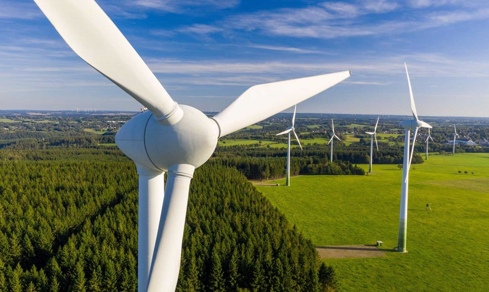
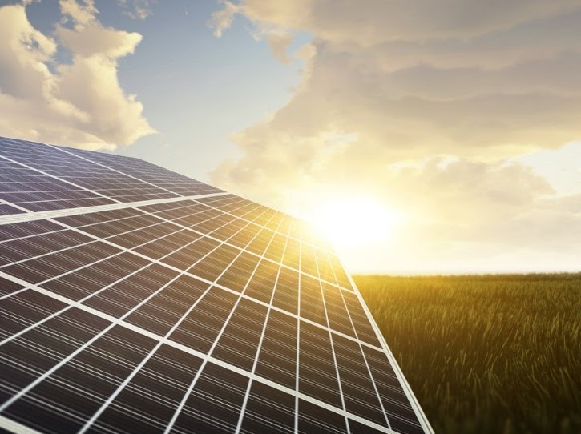

La etimología griega del nombre nos da muchas pistas sobre lo que implica la geotermia: geō (tierra) y thermós (calor). Es decir, la energía que proviene del calor de la tierra. El Consejo Europeo de la Energía Geotérmica (EGEC) la define como “la energía almacenada en forma de calor por debajo de la superficie de la tierra”. Esta definición hace referencia al calor almacenado en rocas, suelos y aguas subterráneas, cualquiera que sea su temperatura, profundidad o procedencia.
Se considera una energía renovable y limpia. El calor que proporciona es ilimitado y la temperatura del subsuelo es muy estable, lo que permite obtener rendimientos energéticos elevado.
Existen diferentes tipos de energía geotérmica dependiendo del tipo de recurso natural del que se extraiga (de agua caliente, pozos secos, géiseres, vapor seco), la profundidad de perforación (superficial, desde algunos metros hasta grandes profundidades por encima de 10 Km) o la temperatura del agua (de alta a baja temperatura), entre otros.
La geotermia se puede utilizar para producir electricidad o para usos térmicos. Las posibilidades de este tipo de energía dependen fundamentalmente de la temperatura a la que se encuentren los recursos geotérmicos:
La tierra está compuesta por varios estratos o capas rocosas que van desde el centro hasta la zona más superficial. El núcleo del planeta está conformado por una masa sólida e incandescente compuesta por minerales, rocas fundidas y gases, entre los que predominan el hierro y el níquel. Por encima del núcleo está el manto, también bastante fluido y caliente y finalmente la corteza terrestre, la capa más superficial que aun así es de aproximadamente 20 km de espesor.
Cuando el agua de las precipitaciones se filtra a través de la corteza terrestre, forma masas de agua (corrientes profundas y acuíferos) que, al entrar en contacto con el calor del subsuelo, dan lugar a una reserva geotérmica formada por agua y vapor a elevadas temperaturas. En ocasiones el calor existe, pero no el acuífero, por lo que para explotar la energía geotérmica hay que inyectar algún fluido que permita extraerla (normalmente agua).
Las centrales geotérmicas extraen la energía térmica en forma de agua caliente y vapor. En la superficie se aprovecha esa energía bien directamente separando el vapor de la mezcla con un separador ciclónico o bien indirectamente utilizando un intercambiador de calor. El agua sobrante se reinyecta de nuevo en el subsuelo para reiniciar el ciclo y el vapor obtenido se envía a una turbina para generar electricidad.
Se extrae una mezcla de vapor y agua de la reserva geotérmica mediante un pozo subterráneo.
La mezcla llega al separador ciclónico, donde se disocia el vapor de las moléculas de agua.
El agua en estado líquido se devuelve al subsuelo para que se vuelva a calentar.
El vapor extraído hace girar una turbina (energía mecánica), que a su vez activa un generador de energía eléctrica.
El generador transforma la energía mecánica en energía eléctrica.
Un transformador envía la energía eléctrica a las subestaciones, que se encargan de trasladarla a la red de distribución.
El vapor sobrante se condensa, se vuelve a inyectar en el subsuelo y el proceso se repite de nuevo.
El principal inconveniente de la energía geotérmica es la elevada inversión inicial que hay que realizar para la instalación del sistema, además del riesgo de que la perforación no encuentre el recurso geotérmico necesario.
La energía geotérmica solo se puede explotar con relativa facilidad si existe un recurso “anómalo”, es decir mayor calor del convencional a poca profundidad. Esto ocurre únicamente en zonas geológicamente activas con volcanes o fallas tectónicas.
Por el contrario, las ventajas que reúne la geotermia son amplias:
Al ser una fuente renovable de producción continua, supone una gran alternativa frente a los combustibles fósiles.
Es una energía estable porque no depende de las fluctuaciones de recursos meteorológicos como el viento o el sol.
Los recursos geotérmicos son prácticamente inagotables a escala humana
Supone un gran ahorro, tanto económico como energético. Aunque la inversión inicial es importante, ofrece una gran durabilidad y requiere de un escaso mantenimiento.
Las instalaciones geotérmicas tienen un bajo impacto visual y no generan ruidos exteriores. Además, los residuos que produce son mínimos.